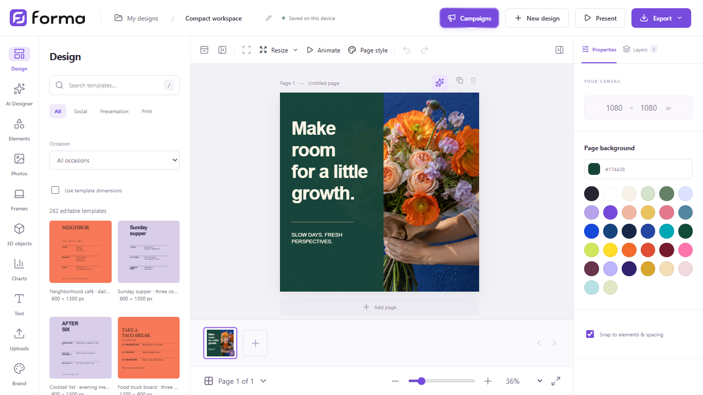
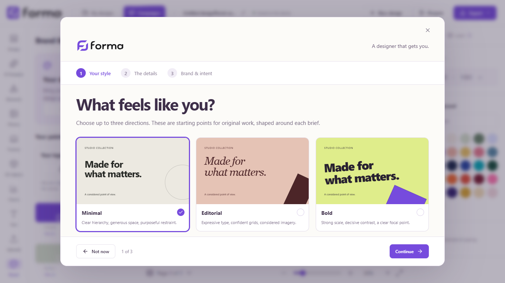
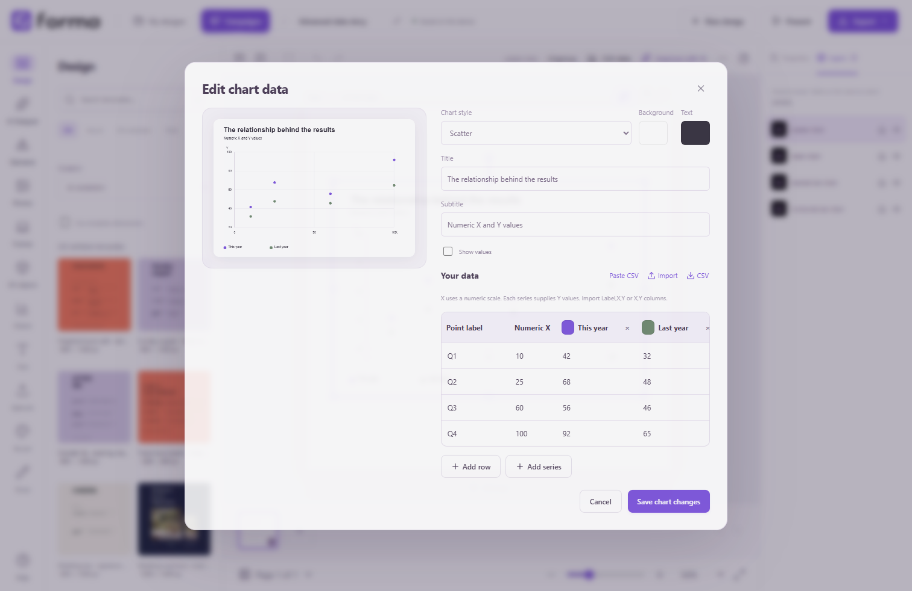

The walkthrough
Your idea.
Start here.
From opening Forma to making something your own.
Download for WindowsInstall. Open. Create.
Download the Windows installer, run it and choose your installation folder. Open Forma Studio from your desktop or Start menu. No terminal, Node.js or Docker is needed for everyday use.
Windows 10/11, 64-bit. The current installer is unsigned, so Windows may show an unknown-publisher warning.

Make your first design.
Choose a template from Design, or start a blank canvas. Add text, photos and elements from the sidebar. Drag to arrange, use the handles to resize, and select several objects to move or group them together.
Right-click a selection for actions such as Improve with AI. Undo is always there while you explore.
Give it your direction.
Open Brand → Set up brand & style. Add your business, mission, palette and personal design preferences in one place. This gives the AI shared context for future requests.

Your AI.
Your direction.
Open AI Designer → AI account & connection → Sign in to Codex. Finish signing in in your browser, then return to Forma. An existing supported Codex login is also recognized.
AI needs your own supported account, internet access and available provider usage. The brief and relevant content go to that provider; account costs are separate from Forma. Manual editing and exports work offline.
A brief that helps.
Describe the audience, purpose, format, main message and what must stay unchanged. Upload the images you want used. Review the result and any review warnings before applying it.
Change one specific area.
Select a photo, right-click and choose AI Pencil. Mark the area, describe the change, and review it in the context of the original image.
Build a campaign.
Open Campaigns in the editor header. Create the campaign around one objective, then use folders for different audiences, offers or subcampaigns.
Give each folder its intent, choose the formats and quantity, upload your images, then create the designs. Review and edit each result before exporting.
Keep the details editable.
Add charts and edit their data in the inspector. Use photo frames and crop controls, rotate 3D objects, and adjust individual text and graphic layers.

Keep it.
Share it.
Your designs save on this device. Use Export → Forma JSON for an editable backup or to move a design to another computer. Import that file into Forma to keep working.
Export finished work as PNG, JPG, SVG or PDF. Use GIF or WebM for supported motion exports. Keep an editable JSON backup before moving or uninstalling the app.
Stay up to date.
Choose Help → Check for updates. Download the update, then choose Save & restart when you are ready. Your designs remain on the device.
Versions 1.1.x need the current installer once to enable future in-app updates.
Get FormaYour storage.
Your choice.
In the desktop app, open My designs → Cloud storage. Connect your own Wasabi account to back up designs, campaigns, uploads, fonts, text kits and your shared brand and style together.
Local saves continue independently. Cloud keys are encrypted on your computer; backup transfers go directly to your private Wasabi bucket. Wasabi bills your account separately.
Choose Back up now or enable automatic backups of changed saved work, up to every 15 minutes while Forma is open. Backups are compressed and limited to 256 MB of saved workspace data each. Built-in assets and AI credentials are not uploaded.
Connect your bucket.
- Create a Wasabi account and a private bucket. Keep public access off.
- Create a dedicated programmatic user with s3:ListBucket on that bucket and s3:PutObject / s3:GetObject on YOUR_BUCKET/forma-studio/backups/*. Delete access is not needed.
- Create the user's access key. In Forma, enter its bucket, region, matching HTTPS endpoint, access key and secret.
- Choose Connect & back up. Wait for the completed-backup confirmation.
Recover without losing current projects.
Choose Browse backups → Review restore. Restore adds designs and campaigns as new copies. You decide whether to use the saved brand and style. Unfinished AI work stays paused until you resume it. Finish or pause running campaigns first, then reopen the studio after restoring.
Disconnect keeps the existing backups in your account. Manage history and retention there. Review Wasabi’s storage minimums and retention billing.